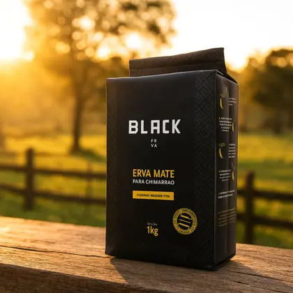
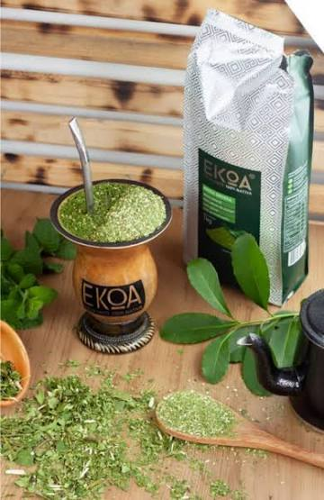
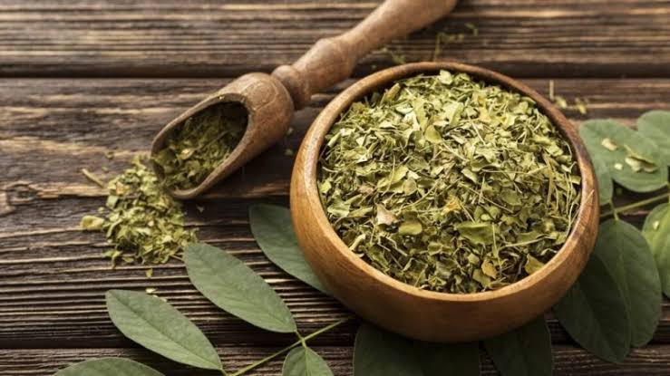
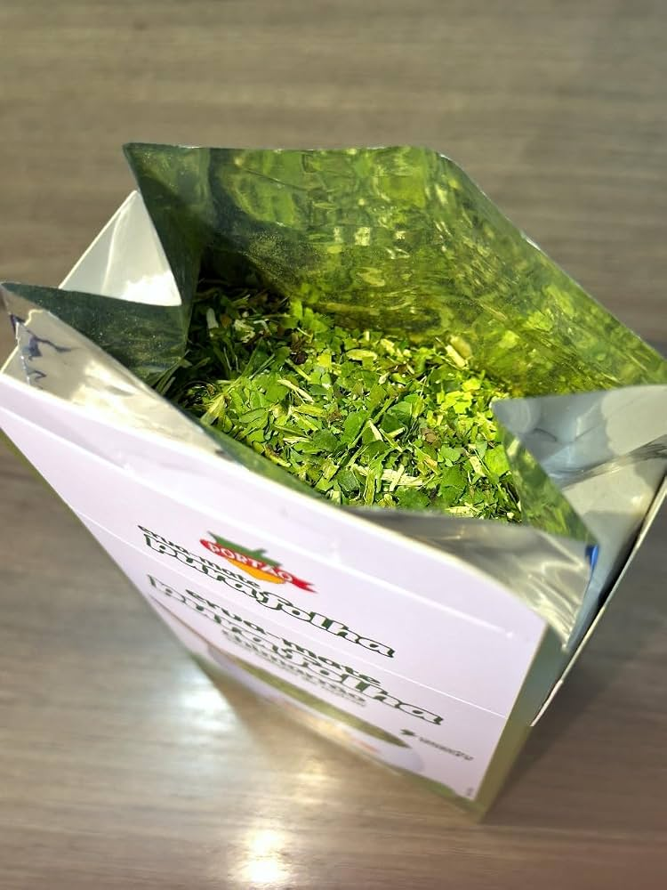

importãncia cultural
A erva-mate é muito importante para a cultura do Paraná. Ela faz parte da história do estado desde os povos indígenas e teve grande importância econômica. O chimarrão também se tornou uma tradição, representando amizade, união e hospitalidade. Por isso, a erva-mate é um símbolo da cultura e identidade paranaense.

a importãncia cultural da erva-mate
A erva-mate é um dos principais símbolos da cultura paranaense. Seu uso teve origem entre os povos indígenas e foi incorporado pelos colonizadores, tornando-se parte da história e da identidade do Paraná. Além de sua importância econômica, o cultivo e o consumo da erva-mate influenciaram os costumes, as tradições e a convivência social. O hábito de compartilhar o chimarrão representa hospitalidade, respeito e união, preservando um patrimônio cultural que continua presente na vida dos paranaenses.

A erva-mate como patrimônio cultural paranaense
é um dos maiores símbolos do Paraná, respondendo por quase 90% da produção nacional e tendo seu cultivo tradicional reconhecido internacionalmente pela ONU como Patrimônio Agrícola Mundial. Ela representa a união entre a história econômica, a ancestralidade indígena e a preservação ambiental do estado.

memoria e padrimonio
imagens em memoria da erva mate.

curiosidade
curiosidade 1
A erva-mate é uma planta nativa da América do Sul, amplamente consumida em países como Brasil, Argentina, Paraguai e Uruguai. Além de ser a base para bebidas tradicionais como o chimarrão e o tererê, ela carrega consigo uma rica história cultural e espiritual. Entre as diversas tradições que envolvem essa planta, destaca-se a lenda guarani que explica sua origem mística, associada à generosidade e à conexão com a natureza. Assim, no Pantanal, também desempenha um papel cultural local dos pantaneiros.